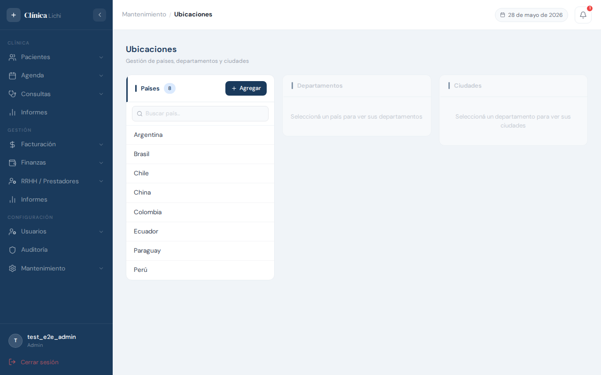
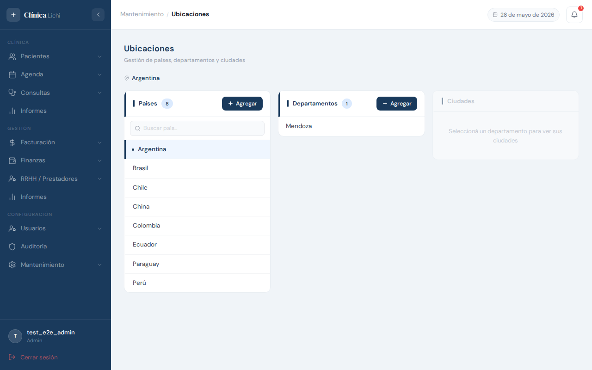
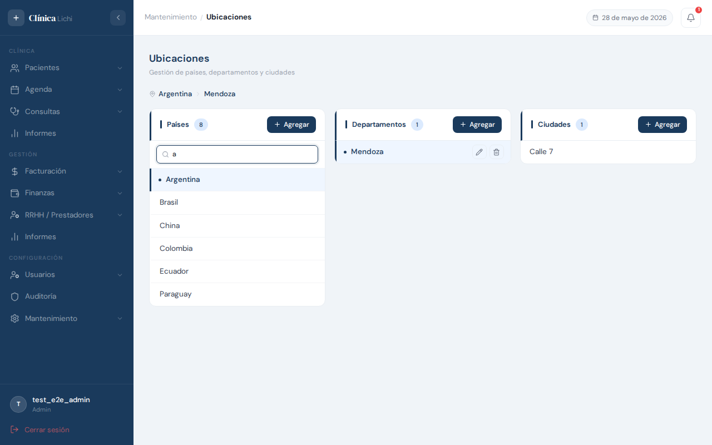
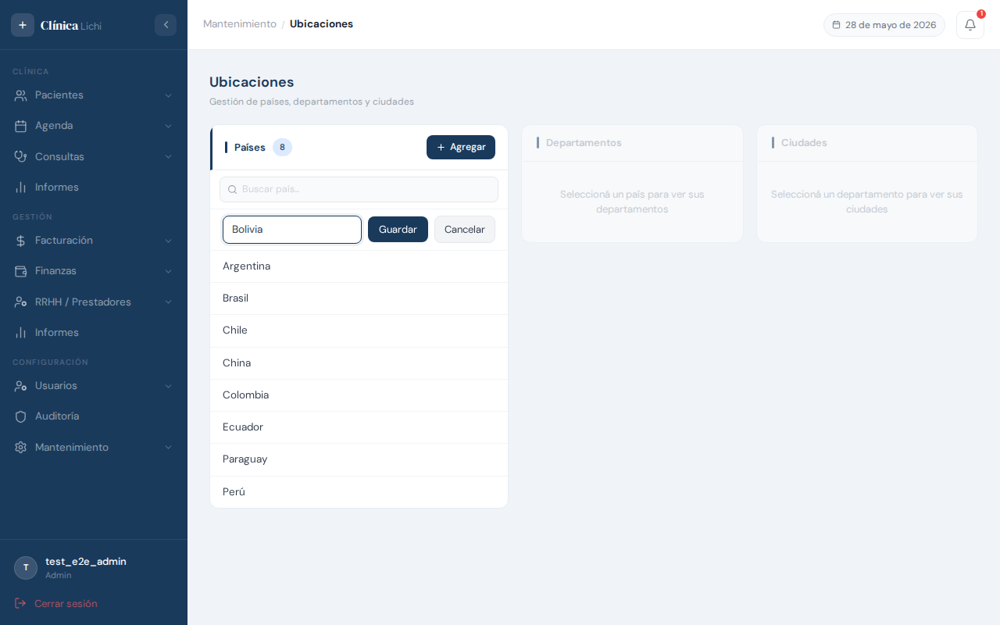
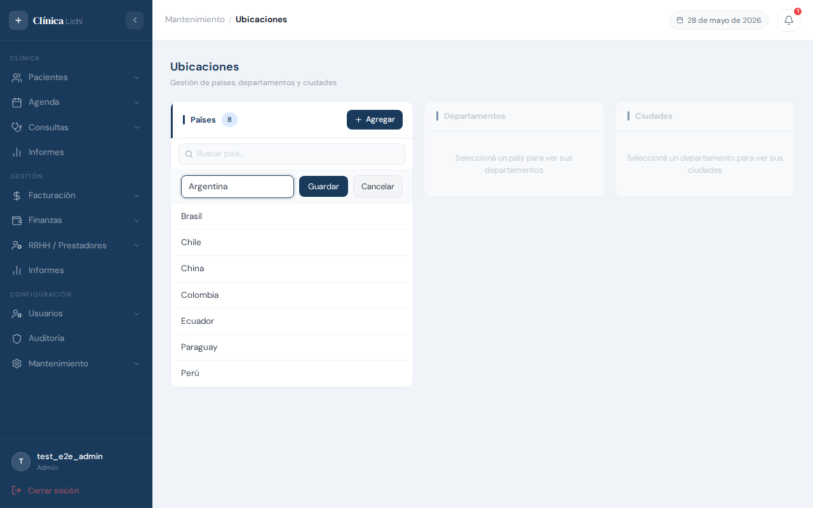
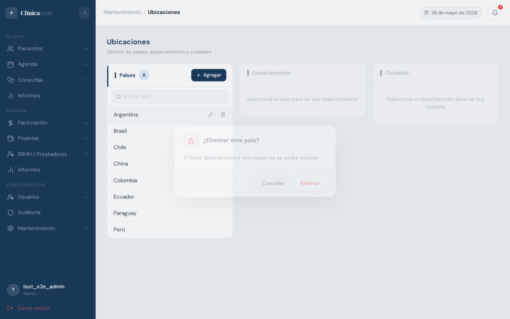
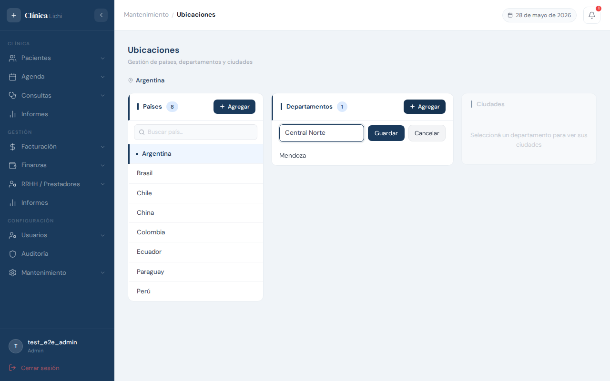
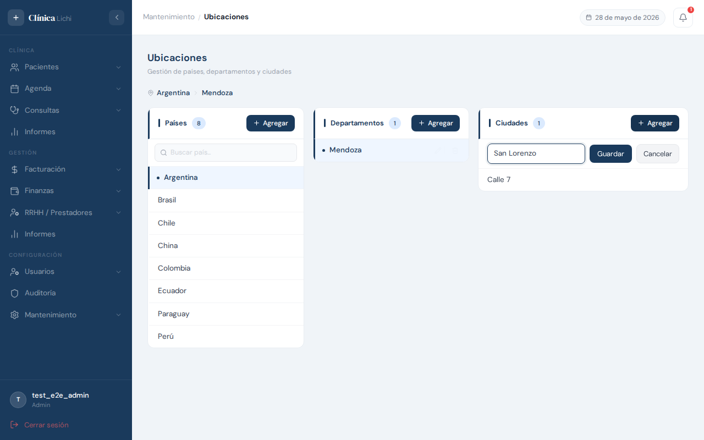

Descripción del módulo
El módulo Ubicaciones gestiona la estructura geográfica del sistema: los países, sus departamentos y las ciudades de cada departamento. Esta información se utiliza como dato de referencia en los formularios de pacientes, responsables y prestadores.
La estructura tiene tres niveles jerárquicos:
Al seleccionar un país, la columna central se actualiza automáticamente mostrando solo sus departamentos. Al seleccionar un departamento, la columna derecha muestra solo sus ciudades.
| Nivel | Descripción | Depende de |
|---|---|---|
| País | Raíz de la jerarquía. Ejemplos: Paraguay, Argentina, Brasil. | — |
| Departamento | División del país. Ejemplos: Central, Alto Paraná, Itapúa. | País seleccionado |
| Ciudad | División del departamento. Ejemplos: Asunción, Ciudad del Este. | Departamento seleccionado |
| Acción | Administrador | Recepcionista |
|---|---|---|
| Ver listado | ✅ | ✅ |
| Agregar país / departamento / ciudad | ✅ | ✅ |
| Editar nombre | ✅ | ✅ |
| Eliminar (borrado lógico) | ✅ | 🚫 |
Acceder al módulo
En el menú lateral izquierdo, bajo la sección Mantenimiento, hacé clic en Ubicaciones.
Pantalla principal — tres columnas en cascada
Al ingresar al módulo se muestran tres columnas una al lado de la otra. La selección en cada columna determina qué se muestra en la siguiente.

Cómo navegar la jerarquía
- En la columna Países (izquierda), hacé clic sobre el país que querés explorar. El ítem seleccionado se resalta con un borde azul en el lateral izquierdo.
- La columna Departamentos (centro) se actualiza automáticamente mostrando solo los departamentos del país elegido.
- Hacé clic sobre un departamento para que la columna Ciudades (derecha) muestre sus ciudades.
Visualización en mobile
En dispositivos móviles, las tres columnas no caben en pantalla al mismo tiempo. El sistema muestra de a una columna por vez y agrega un breadcrumb en la parte superior (ej: Paraguay › Central) que permite volver al nivel anterior con un toque.

Buscar dentro de una columna
Cuando una columna tiene más de 5 ítems, aparece automáticamente un campo de búsqueda en la parte superior de esa columna. La búsqueda filtra por nombre en tiempo real (sin necesidad de presionar Enter).

Agregar un país
Para registrar un nuevo país hacé clic en el botón + que aparece en el encabezado de la columna Países.

- Hacé clic en el botón + del encabezado de la columna Países. Aparece una nueva fila al final con un campo de texto vacío.
- Escribí el nombre del país (ej:
Uruguay). - Presioná Enter o hacé clic en el ícono de guardar (✓) para confirmar.
- El país aparece en la lista con sus botones de edición y eliminación.
Editar un país
Para cambiar el nombre de un país existente, pasá el cursor sobre la fila y hacé clic en el ícono de lápiz (✏️) que aparece a la derecha.

- Pasá el cursor sobre la fila del país que querés modificar. Aparecen los botones de edición y eliminación.
- Hacé clic en el ícono de lápiz (✏️). La fila se convierte en un campo de texto con el nombre actual.
- Modificá el nombre y presioná Enter o hacé clic en el ícono de guardar (✓).
- El nombre actualizado se muestra en la fila. El cambio queda registrado en Auditoría.
Eliminar un país
Eliminar un país lo quita de la lista activa pero no lo borra físicamente de la base de datos (borrado lógico). Los datos históricos vinculados permanecen intactos.
- Pasá el cursor sobre la fila del país y hacé clic en el ícono de papelera 🗑️.
- El sistema muestra un diálogo de confirmación: "¿Eliminar [nombre del país]? Esta acción no puede deshacerse."
- Hacé clic en Eliminar para confirmar, o en Cancelar para volver.
- El país desaparece de la lista. Se muestra una notificación de confirmación.

- Departamentos activos registrados bajo ese país.
- Personas (pacientes, prestadores, responsables) con ese país en su dirección.
Agregar un departamento
Los departamentos se agregan dentro del país que tengas seleccionado en ese momento. Primero asegurate de tener el país correcto activo (fila resaltada en azul).

- En la columna Países, hacé clic sobre el país al que querés agregar un departamento.
- En la columna Departamentos, hacé clic en el botón + del encabezado.
- Aparece una fila editable al final. Escribí el nombre del departamento.
- Presioná Enter o hacé clic en el ícono de guardar (✓).
Editar un departamento
El procedimiento es idéntico al de editar un país, pero dentro de la columna central.
- Asegurate de tener seleccionado el país al que pertenece el departamento.
- En la columna Departamentos, pasá el cursor sobre el departamento a modificar y hacé clic en el ícono de lápiz (✏️).
- Modificá el nombre en la fila editable y presioná Enter o el ícono de guardar.
Eliminar un departamento
- En la columna Departamentos, pasá el cursor sobre el departamento y hacé clic en el ícono de papelera 🗑️.
- Confirmá en el diálogo que aparece.
- El departamento desaparece de la lista.
- Ciudades activas registradas bajo ese departamento.
- Personas con ese departamento en su dirección.
Agregar una ciudad
Las ciudades se agregan dentro del departamento seleccionado. Asegurate de tener activos el país y el departamento correctos antes de hacer clic en +.

- Seleccioná el País y el Departamento correctos haciendo clic en sus respectivas filas.
- En la columna Ciudades, hacé clic en el botón + del encabezado.
- Escribí el nombre de la ciudad y presioná Enter o el ícono de guardar.
Editar una ciudad
El procedimiento es idéntico al de editar un país o departamento, pero dentro de la columna derecha.
- Asegurate de tener seleccionados el país y departamento correspondientes para que la ciudad sea visible.
- En la columna Ciudades, pasá el cursor sobre la ciudad a modificar y hacé clic en el ícono de lápiz (✏️).
- Modificá el nombre en la fila editable y presioná Enter o el ícono de guardar.
Eliminar una ciudad
- En la columna Ciudades, pasá el cursor sobre la ciudad y hacé clic en el ícono de papelera 🗑️.
- Confirmá en el diálogo que aparece.
- La ciudad desaparece de la lista.
Mensajes de error frecuentes
| Mensaje | Situación | Qué hacer |
|---|---|---|
| "Ya existe un país con ese nombre" | Se intenta agregar o renombrar un país con un nombre que ya existe (la comparación no distingue mayúsculas de minúsculas). | Usá un nombre diferente o verificá que el país ya esté en la lista. |
| "Ya existe un departamento con ese nombre en este país" | El nombre de departamento ya está registrado dentro del país activo. | Verificá si el departamento ya existe o usá un nombre diferente. |
| "Ya existe una ciudad con ese nombre en este departamento" | El nombre de ciudad ya está registrado dentro del departamento activo. | Verificá si la ciudad ya existe o usá un nombre diferente. |
| "No se puede eliminar: tiene departamentos activos" | Se intenta eliminar un país que aún tiene departamentos activos. | Eliminá primero todos los departamentos del país (y sus ciudades), luego intentá eliminar el país. |
| "No se puede eliminar: tiene ciudades activas" | Se intenta eliminar un departamento que aún tiene ciudades activas. | Eliminá primero todas las ciudades del departamento. |
| "No se puede eliminar: tiene personas activas vinculadas" | Se intenta eliminar un país, departamento o ciudad que tiene personas (pacientes, prestadores, responsables) con esa ubicación en su dirección. | No es posible eliminar la ubicación mientras tenga personas vinculadas. Contactá al administrador si necesitás reorganizar la estructura geográfica. |
| Campo requerido vacío al guardar | Se intentó guardar una fila con el campo de nombre vacío. | Ingresá un nombre antes de confirmar. |
Comportamientos esperados que pueden confundirse con errores
| Situación | Explicación |
|---|---|
| La columna Departamentos aparece vacía al seleccionar un país | Es correcto. Ese país no tiene departamentos cargados todavía. Usá el botón + para agregar el primero. |
| La columna Ciudades aparece vacía al seleccionar un departamento | Es correcto. Ese departamento no tiene ciudades cargadas. Usá el botón + para agregar la primera. |
| No aparece el ícono de papelera 🗑️ junto a los ítems | Tu rol no tiene permiso para eliminar. Solo los Administradores ven ese ícono. Las Recepcionistas solo pueden agregar y editar. |
| El campo de búsqueda no aparece en una columna | La búsqueda local se muestra solo cuando la columna tiene más de 5 ítems. Con 5 o menos, no es necesaria. |
| Al cambiar de país seleccionado, la búsqueda de departamentos desaparece | Es correcto. La búsqueda local se limpia automáticamente cuando cambia el padre, para mostrar todos los ítems del nuevo contexto. |